MLOps with SageMaker — Part II
Customize train 🐳
In an earlier post we went through how to run a training script using sklearn, PyTorch or transformers with SageMaker by leveraging their preconfigured framework containers. The training scripts we used were self contained, meaning they only used the respective framework and python standard library. This meant we only had to worry about uploading our data and fetching our model from s3, and deciding the instance type we wanted to use.
This is excellent for quick prototyping but in practice our code lives in separate modules to reduce duplication, and often requires additional libraries. Case in point: all our training scripts from the previous post were sharing the same load_data function and our PyTorch script had to implement its own tokenizer in the absence of additional libraries.
In this post, we will look into how we can customize SageMaker training to address those issues as well as create our own containers to run training.
As a reminder, this is our minimal project setup
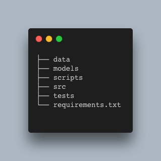
The code for our projects lives in src and the libraries required are defined in requirements.txt.
The data comes from a sentiment classification task in Kaggle. The data comes in CSV format and contains two columns, text and label. The label is either 0 or 1.
We use a scripts folder to add all necessary functionality for interacting with SageMaker. The intention is that you can simply take some of those into your own project and get started.
Here is an sklearn training script that uses tf-idf naive-bayes which imports load_data from a utils module.
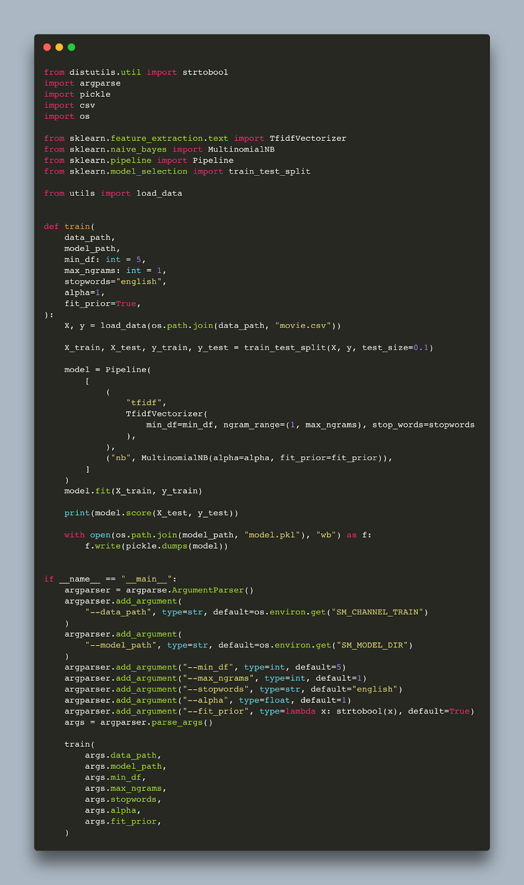
And here is the utils module
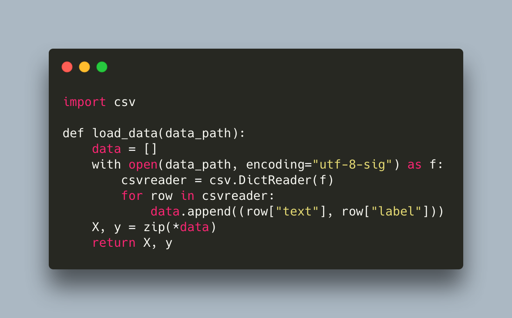
Let’s run this outside of SageMaker first.
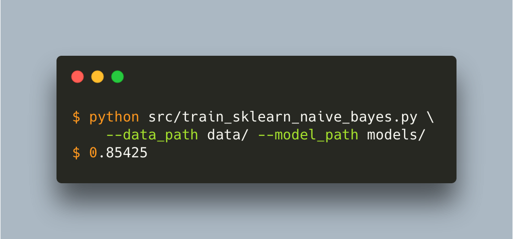
In order for SageMaker to run our job, we need to include any additional files that are required. We can do that via the source_dir parameter that all SageMaker Estimators (e.g. SkLearn, PyTorch, HuggingFace, etc.) expose. As the name hints, this allows us to specify a directory with our source code which should be included. This is our src folder.
Here is the code for running the job, which is very similar to one from the previous post
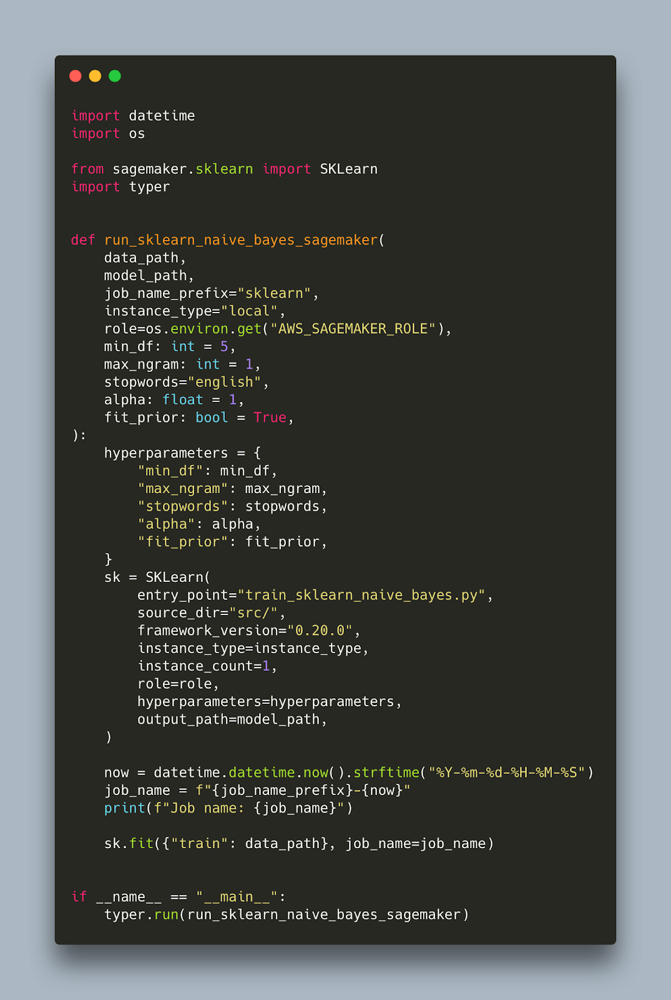
Notice that the entry_point no longer needs to include src as the path is now relative. This is how you run it
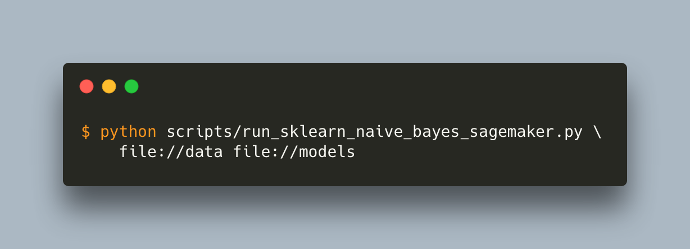
This should take care of any additional modules our code might depend on. Remember we need to prepend data and model paths with file:// or s3:// for local or s3 paths respectively.
How about extra libraries? In our previous post our pytorch training script included a custom tokenizer to avoid using external libraries. Here is another pytorch training script which uses the tokenizers library from hugging face for tokenization instead.
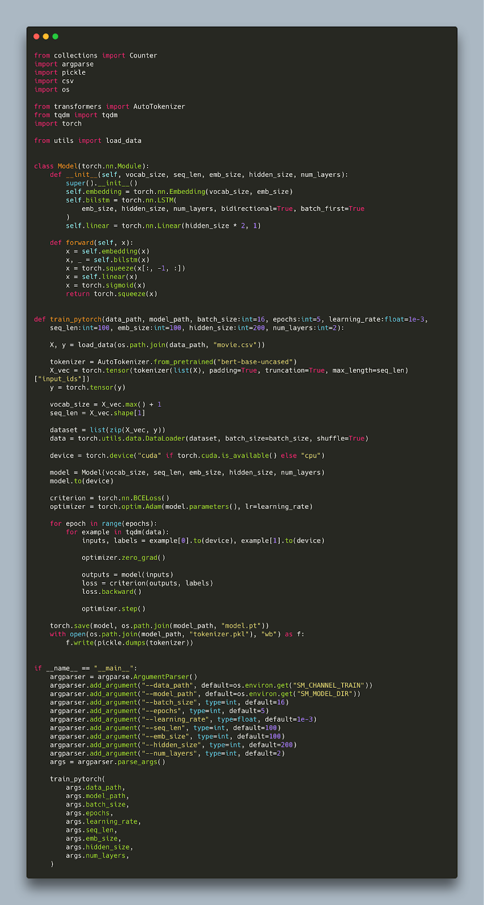
The only thing we have to change for SageMaker to pick up our additional libraries is an environment variable called SAGEMAKER_REQUIREMENTS. This variable needs to point to our requirements.txt. We can define environment variables to be passed inside the container using the environment parameter of our estimator.
Here is the part that needs to change (full script)
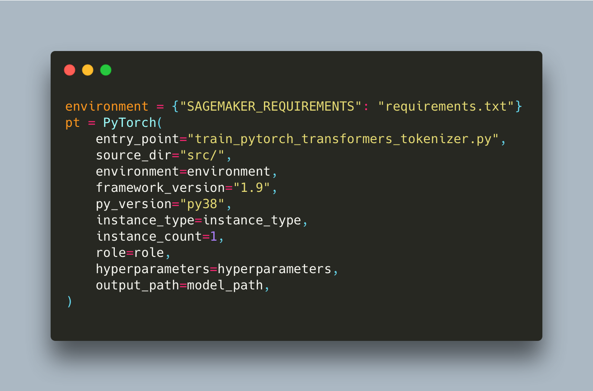
When SageMaker runs our job it will install all additional libraries mentioned in that file during setup.
While these customisations can take you a long way, they are still building on top of SageMaker preconfigured containers. This is convenient because we do not have to build and push any containers to run our job or worry about setting up gpu drivers. There are cases though, for example when you are not using one of the frameworks for which there are preconfigured containers, where a custom container environment for your job makes more sense.
To customize the training environment, we need to create our own containers. We need a Dockerfile for that. Here is a minimal one to use with our sklearn scripts.
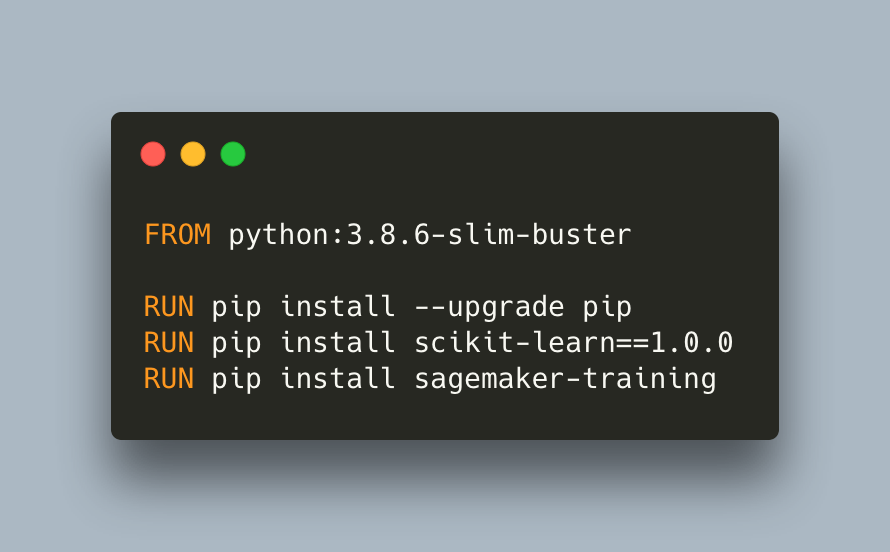
Notice that we do not pass any code. The intention is to create an environment with all libraries needed and pass the training script and any additional source files when invoking the job, similar to what we have been doing with the preconfigured containers. This is called Script Mode mode in SageMaker, and in order for it to work we need to have sagemaker-training installed. Let’s build our container
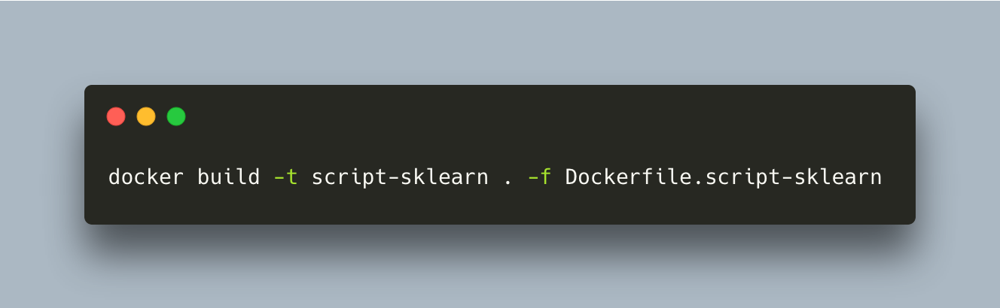
To run our job we will use a generic Estimator that is framework agnostic
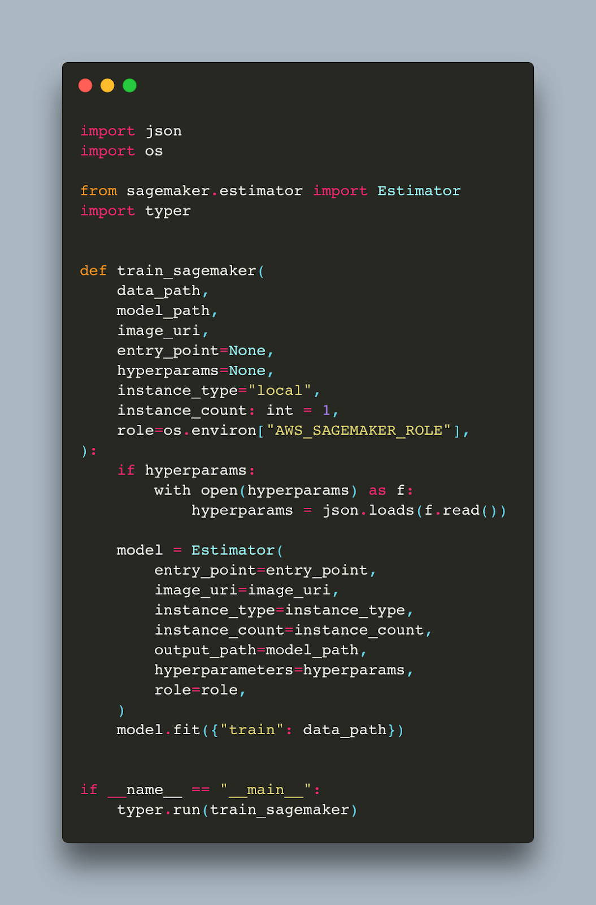
The main difference is that we need to pass the image_uri parameter which is the name of our container, script-sklearn in this case.
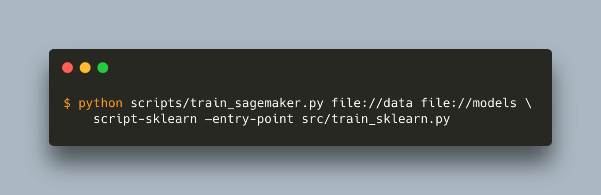
To be able to run the job using AWS infrastructure we need to push our container to ECR. Here is a small bash script that does this (read more here)
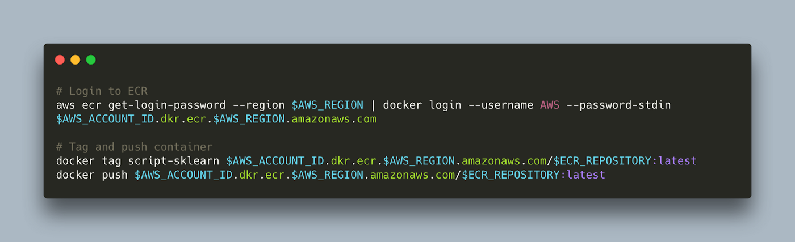
This approach allows us to customize our environment but we can take it even further if we remove sagemaker-training. This means we need to replicate some of its functionality. Let’s start with the Dockerfile
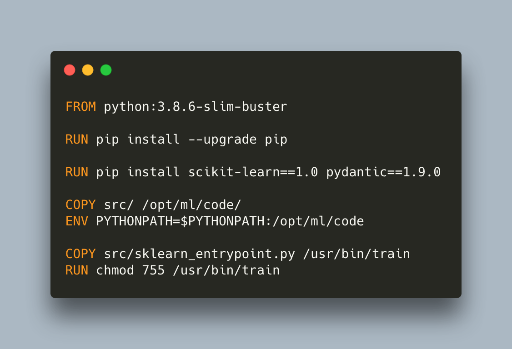
Notice that we need to copy our code. This makes it slightly less flexible as we will need to rebuild and push our container whenever we make any change to the training. We also need to name our entrypoint python script train, and make it executable intentionally because SageMaker will look for and run train upon start, and it will fail if it cannot find it. Note that we also update the PYTHONPATH to make our code visible from the train entrypoint script so that the imports work.
Here is our python entrypoint:
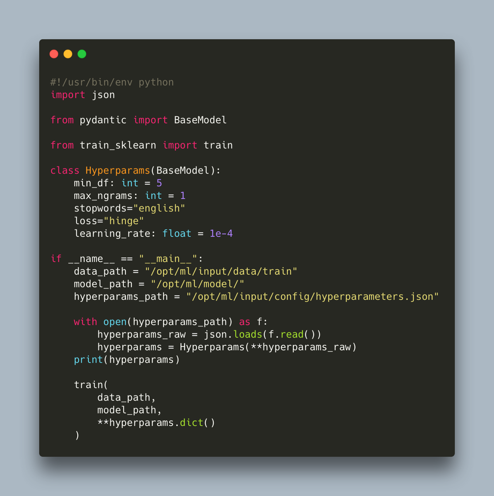
It is important to include #!/usr/bin/env python so that SageMaker knows how to run the script. In the absence of sagemaker-training, the paths are not initialized in environment variables and the hyperparameters are not read and passed automatically, so we need to do that ourselves. The predefined locations that SageMaker used are
/opt/ml/input/data/train— this is where the train data is being copied,/opt/ml/model— the contents of this folder are copied out of the container,/opt/ml/input/config/hyperparameters.json— this is where the parameters passed as arguments to the estimator are saved
We also use Pydantic to validate and convert types for our hyperparameters, otherwise we would need to convert each to their right type.
You can find all the code in our sagemaker examples repository https://github.com/MantisAI/sagemaker_examples
In this post we explored how to customize our SageMaker training job by including additional files and defining any external dependencies. We also show how to use our own custom containers so we are not limited to the ones provided by SageMaker. This post builds on top of an earlier post which also defines some helper script on how to move data and models to and from AWS as well as monitor training which might be of interest to you.
In the next post, we will explore SageMaker inference which reduces the complexity around deploying our models behind an endpoint significantly.